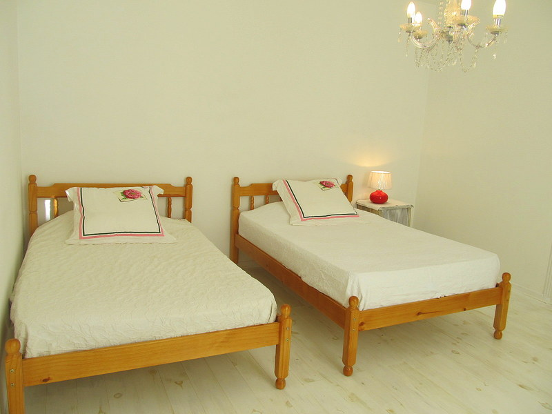
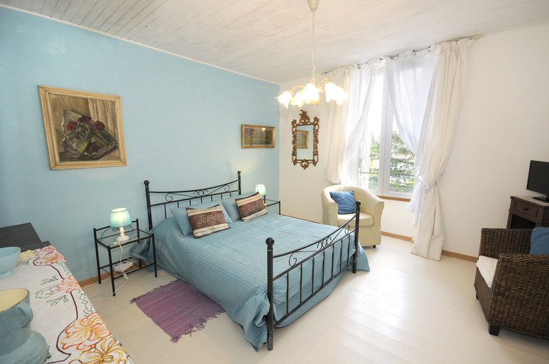
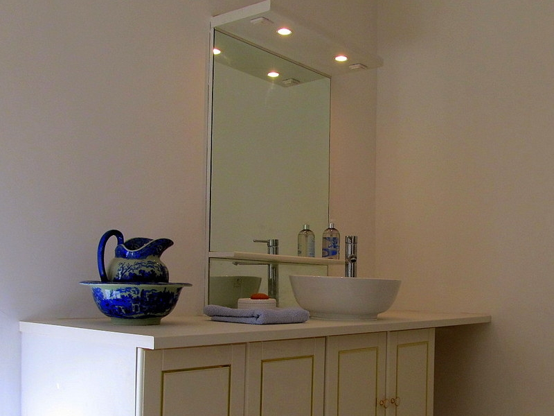
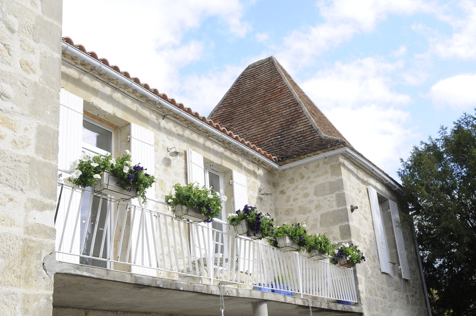
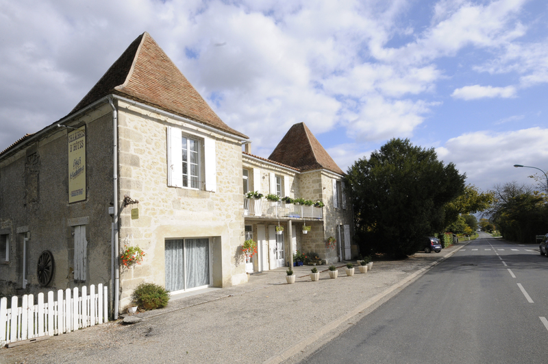
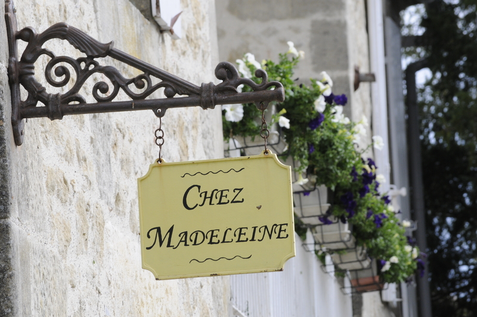
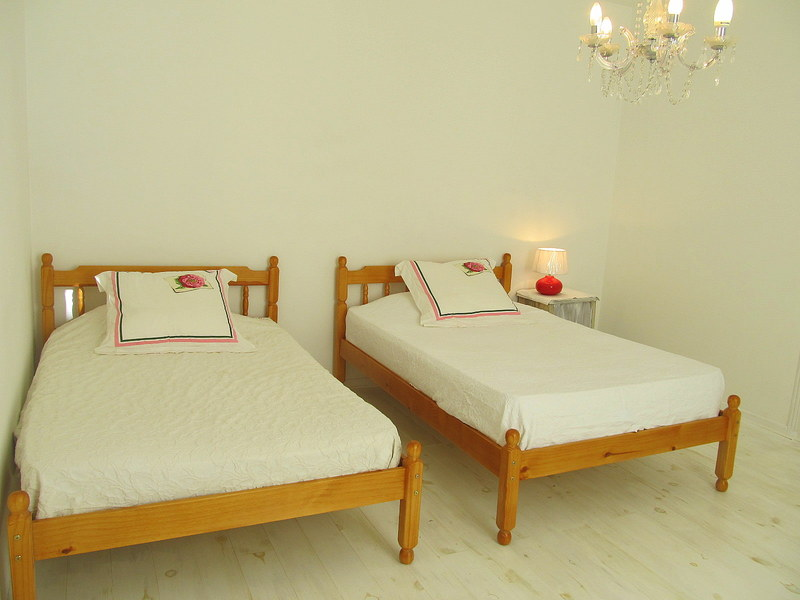
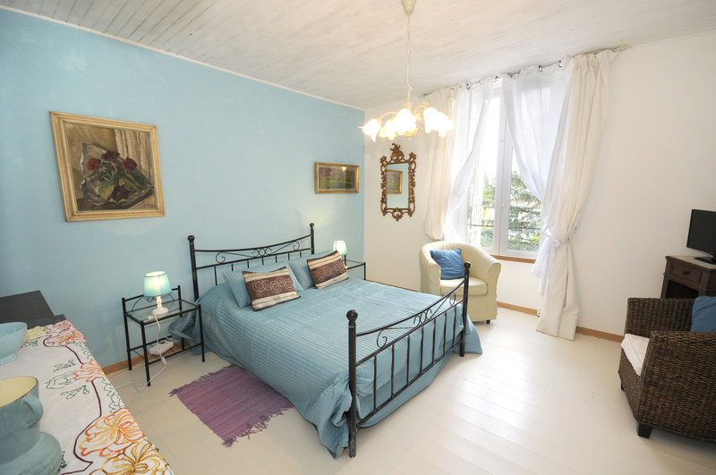
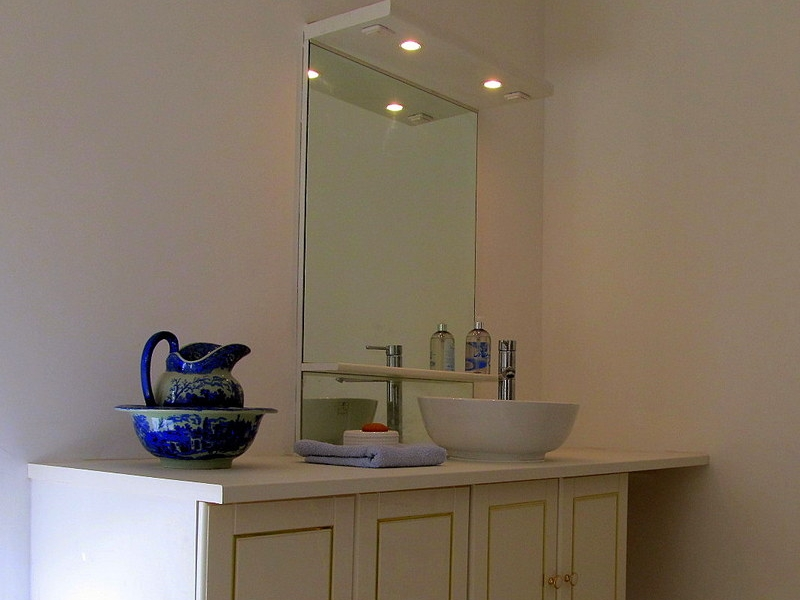
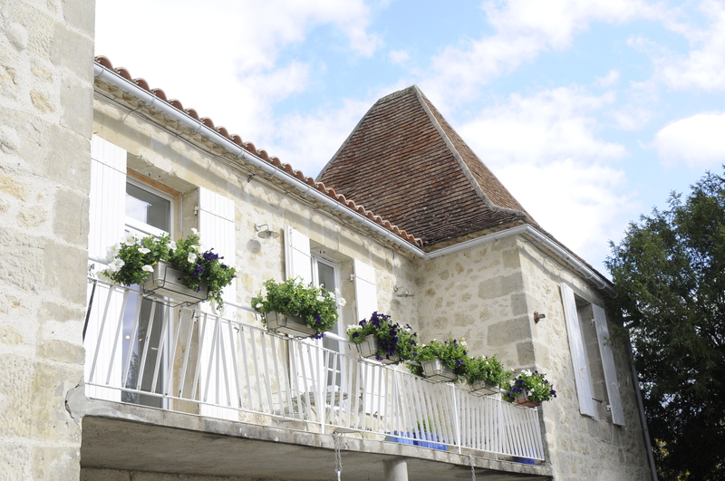
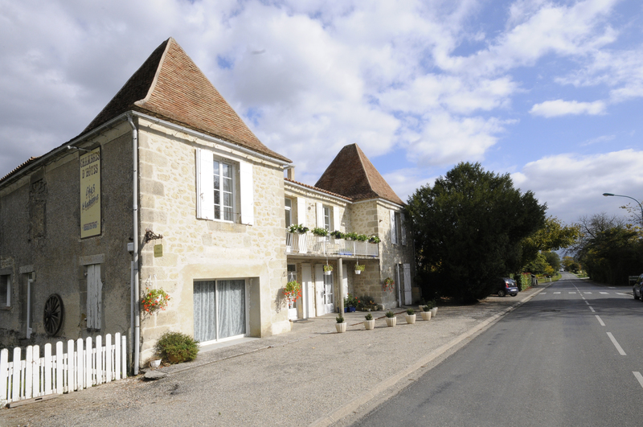
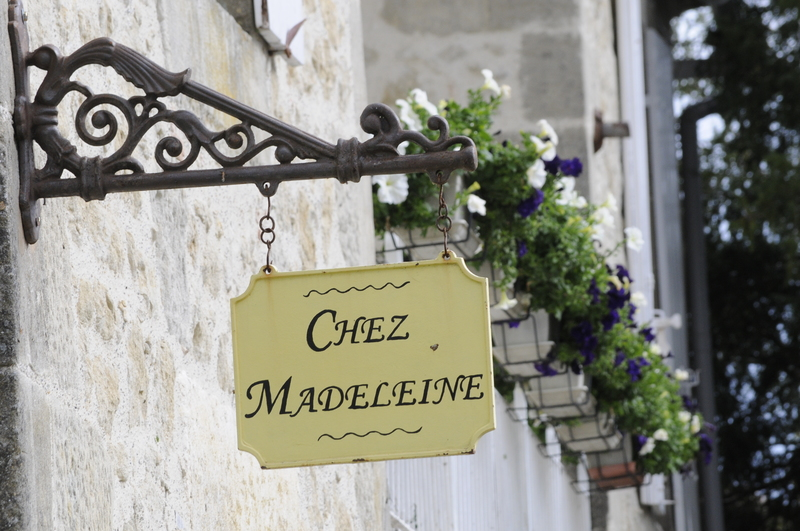
Chez Madeleine
B&B with Self Catering Facilities
Welcome to Chez Madeleine Bed & Breakfast. We offer flexible accommodation with self catering facilities. Located on the borders of Lauzun, 10 minutes from Eymet and 30 minutes from Bergerac Airport, we are ideally situated for your visit to the area, its chateaux, vineyards, medieval towns and villages. Ryanair and Fly Be have regular flights to Bergerac Airport.
Our family suite, with its own luxurious bathroom, can sleep up to four. We also have a large, comfortable twin bedded guest room with generous en suite facilities. There is an attractive balcony to catch the sun as well as a guest lounge and a separate kitchen. If required, the entire accommodation can be rented as a gite. Parking facilities are available and there is also secure parking for motorcyles and bikes to the rear. Guests have their own entrance. We offer continental breakfast and can provide a gluten free breakfast if advised in advance.
The kitchen is fully equipped, so you can chill your wine, or beer, and relax on the balcony after a long day sightseeing. There is a gas hob, microwave, kettle and steam iron. If you fancy a night out, Eymet offers a wide selection of restaurants and bars and there is a pleasant bar and restaurant at Lauzun.